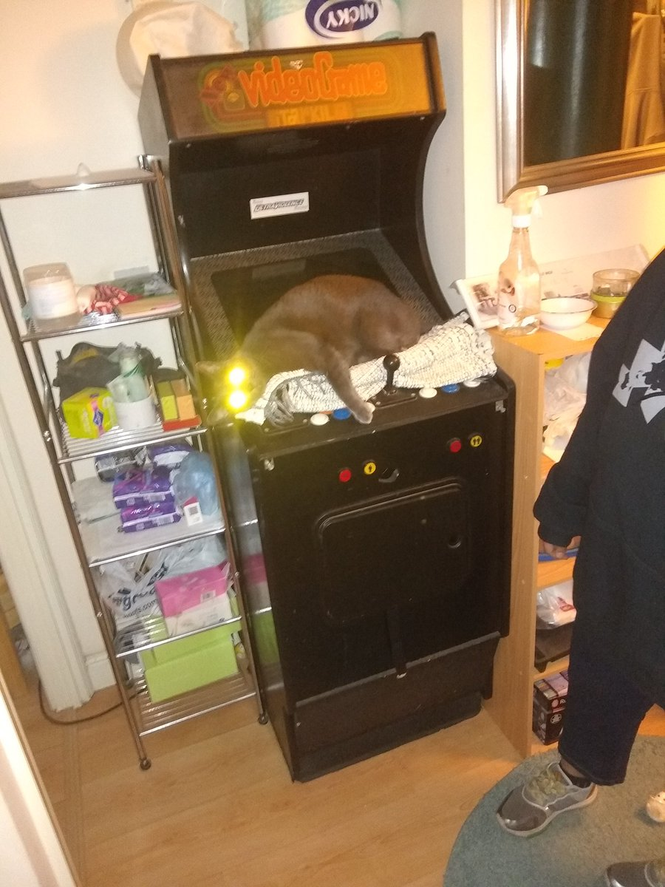
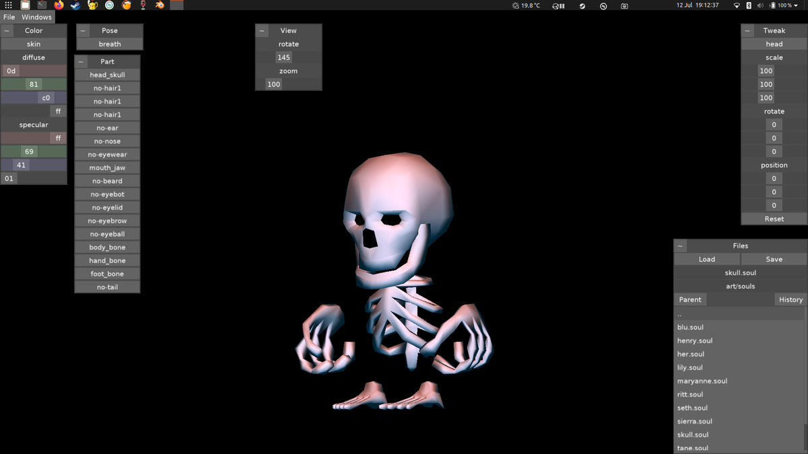

@el_burro_muerto Outside of a shader I would just turn off optimization at the first sign of strangeness.
but shaders are difficult.
Shit still needs to be tracked down though, but disabling optimization is an easy test to help find the problem.
https://twitter.com/wetgenes/status/1289999019775647744 I can't say I have ever had a positive use case for nan values?
Does anyone?
It is just a source of stupid bugs every single bleedin time.
One of the simplest QA breaks is just inputting a NaN.
I am wasting my life putting " if x != x then x = 0 " everywhere :)
Just had a fun glsl bug that kept me guessing for a while.
Turns out an A*B was getting optimized to 0 when i explicitly set B to 0 but not when I read 0 from an attribute.
Not a problem yup?
Except if A is a nan, you now have different results depending on the source of 0.
Any sufficiently broken technology is indistinguishable from magic. https://twitter.com/CMRosens/status/1289492787910467584
https://twitter.com/wetgenes/status/1288496013137850369 @johnmclear and just as Eliza cheats by constantly asking you how you feel, pushing the burden of creativity across, so a toaster can cheat by constantly asking you if you want toast.
and yes I honestly have been pondering how to make a real talkie toaster...
@johnmclear Personally I'm just too distrustful of APIs to want to actually go near it :)
It seems like it could be used to fuzz say 10 hand crafted Eliza style sentances into 1000 slight more varied but equally viable. The thing that gives away something as simple as Eliza is repitition.
I wonder if GPT-3 produces enough smoke and mirrors to be able to build a working talkie toaster?
I mean yeah sure, Eliza is "enough" but would repeat far too obviously. You want something capable of a diferent bread based windup everyday.
https://twitter.com/puppygames/status/1288237220252602368 @puppygames Have you tried killing them?
Perfectly normal picture of a cat on an arcade machine.

https://twitter.com/nachimir/status/1285186665481408513 @nachimir @Robin_B
We have all seen the photo of Data escaping from LA now, but has anyone found out why Data was in LA in the first place?
When will the world learn to stop at Ringo? https://twitter.com/Jontofski/status/1284892422410063872
@magic_bane mr bone man rides what mr bone man wants to ride.
Got the avatar editor working again and modeled some skeleton parts. So now you can make a Mr bone man. #screenshotsaturday was yesterday.

@johnmclear There are so many different bits to blender.
Have you tried the sculpting?
( Load blender and click sculpting on the startup page )
If you are happy creating an unholy potato that's quite an easy and fun part to play with. :)
Updated my make blender less feckin terrible keymap to latest releases.
https://github.com/xriss/blender-mousepad
In the old days this was hard but now with 2.8 onward all it seems to need is swapping the middle and right mouse buttons.
This one simple trick you too can blend with a trackpad.
Nent Sinistram. Retro Confodere.
https://www.epicgames.com/store/en-US/product/mortal-shell/beta
@magic_bane the parrot I based it on did not seem to have any green, although admittedly it was not a real parrot.
Feel free to re-texture it, if you want, the blend is on sketchfab :)
I made a low poly poly. https://skfb.ly/6TG9r